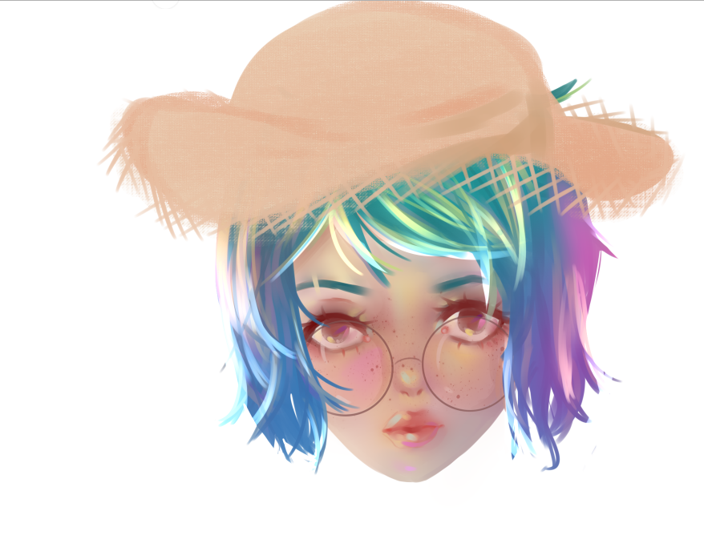
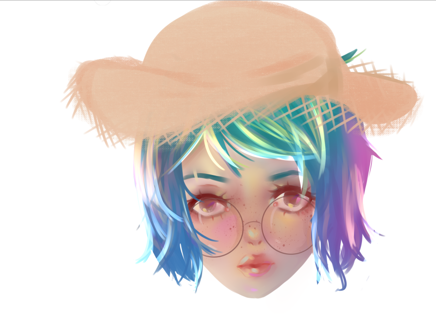

Ruzhen Zhang
email: anna030505@gmail.com
Phone Number: 7743156684
37 Pound Street, Medfield, MA
May 5th, 2003
Currently a junior at Medfield High School, graduation year of 2021

Why I deserve this job
I am currently an associate at a local grocery store. Although the position is not very significant, I have learned many important social skills and communication skills through it.
I have worked to create many positive relationships not only with my other fellow associates but also my managers.
I am also helpful and caring towards the customers that I encounter on a daily basis, I believe that I have the qualities to learn and be part of any communities.
Academic Information
-
GPA (unweighted): 3.95
- GPA(weighted): 4.3
-
ACT composite score; 28
-
Above average for 10th grade AMC test taken in freshman year
-
Participation in AP and honors classes only
Extra Curricular Activities
-
Participated in Technovation
-
Experiences in coding programs
-
Leader of the Medfield Theatre Society
-
participation in track team
-
Participation in varsity swim team
-
Member of the Medfield Science Olympiad
- Second place for one of the Science Olympiad contests
-
Lead dancer for local dance academy for 8 years
-
Member of the Medfield Cheerleading team 2018-2019
-
Competed in TVL for Cheerleading. qualified for Regionals 2018
-
Self-taught artist
-
Participation in National Youth Leadership Forum Medicine
Other Skills
-
Fluent in both Mandarin and English
-
Studied two Romance languages: French and Latin
-
Familiar with JavaScript coding and HTML
-
Completed photography class and dedicated in photography
-
Efficient application of graphic design
-
Strong interest for antiquity cultures
Demonstration
 
